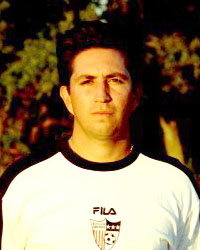

Coach Tim Trevino
Director of Coaching1405 Lorraine Dr.
Plano, TX 75074
Home: (972) 516-9563
Mobile: (214) 546-2225
Position: Forward
Current Team(s):
88 Boys White (Assistant Coach)
89 Boys
92 Boys White (Assistant Coach)
94 Boys
|  |
Coaching Background
Tim's coaching with Soccer America has brought a high level of play and speaks for itself. In the past eight years, his teams have achieved:
- BASC Tulsa Labor Day Invitational Champions 2003
- NTSSA Snickers State Cup Quarter-Finalists 2003
- Fort Worth Sundance Shoot-out Champions 2002
- Dallas Texans CFBSA Tournament Champions 2002
- Austin United Spring Cup Finalists 2002
- Arlington Premier III Champions 2001
- NTSSA Fair Play Cup Champions 2001
- Michael Brown Tournament Champions 2001
- Plano Premier I Champions 2001
- Quickfoot 6v6 Tournament Champions 2001
- AG Edwards St. Valentines Day Champions 2000
- Waco Snickers Cup Champions 1999
- Irving Cup Finalist 1998
- Celtic Cup Champions 1997
- Dallas Rocket Tournament Champions 1997
- Metro Tournament Championship 1996
- Flamefest Tournament Champions 1996
- Irving Cup Championship 1995
- Classic League II Champions 1994
- Classic League Status
- Indoor Soccer League Championships
In 1992, Tim coached the Bishop McGuinness High School "Fighting Irish" who were undefeated in regular season play finishing with 7 wins, 3 ties and 0 losses. The Irish won three straight playoff games to clinch the regional title and advance to Oklahoma's state Championship.
These results were based on a coaching and club philosophy of strong commitment to player development and training modeled after top collegiate and professional programs. Soccer America coaching is designed to build character both on and off the field, and provide excellence in player development unsurpassed in North Texas.
Tim Trevino was inducted into the Oklahoma City University Sports Hall of Fame on November 5, 1999. He is the first soccer player in school history to receive this honor.
Tim can be reached by email at tim.t.soccer@gte.net.
Professional Coaching
| Year | Team / Event | Awards |
|---|
| 1991-1992 | Bishop McGuiness High School | Oklahoma 4A State Finalist - 1992Oklahoma 4A Coaches Achievement Award - 1992Oklahoma All State West Coach - 1992District Coach of the Year - 1992 |
|
|---|
Professional Playing
| Year | Team / Event | Awards |
|---|
| 1994-95 | Oklahoma City Slickers USA | USISL Player of the Week - 1995 | | 1992-93 | SKP Spartak Hradec Kralove Czech Division I | | | 1991-92 | Dallas Rockets USA | Leading Scorer - 1992National Finalist - 1992League All Star Player - 1992 |
|
|---|
Pro / International Playing
| Year | Team / Event |
|---|
| 1992 | CONCACAF, Hamilton International (Bermuda) | | 1992 | CONCACAF, Club America (Mexico) | | 1992 | Friendly -1 FC Kaiserslauten (Germany) | | 1992 | CONCACAF, Cemcol Crown FC (Belize) | | 1992 | CONCACAF, FC Tauro (Panama) | | 1991 | Exhibition Match (US National Team) | | 1990 | European Tour (Belgium, Italy, Switzerland, England) | | 1987 | European Tour (Germany, France, Switzerland) |
|
|---|
Collegiate / Amateur Playing
| Year | Team / Event | Awards |
|---|
| 1991 | Oklahoma City Spirit S.C. | Leading Scorer (13 goals) - 1991All Star MVP - 1991 | | 1989, 91 | US Regional III Team - Olympic | | | 1989, 91 | Oklahoma State Team - Olympic | | | 1988-92 | Oklahoma City University | Hall of Fame Inductee - 1999Career Leading Scorer (69 goals) - 1991National Championships - 1991All District MVP - 1990, 91All Region - 1990, 91All American - 1990, 91Season Leading Scorer (24 goals) - 1990Outstanding Freshman - 1989All District - 1988-91 |
|
|---|
Youth Playing
| Year | Team / Event | Awards |
|---|
| 1987-88 | Dallas Titans | State Cup Finalist - 1988 | | 1984-88 | Jesuit College Preparatory | Leading Scorer - 1988Most Valuable Player - 1988TCIL State Champion - 1987-88All State Player - 1987-88 | | 1980-87 | Texas Longhorns S.C. | Classic League I Finalist - 1981-83, 85, 86State Cup Champion - 1981 |
|
|---|
All Content © 1999-2001 USA Soccer, Inc.
All Source Code © 1999-2001 Grushka, Inc. All rights reserved.
|